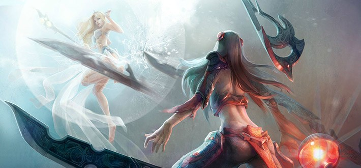

League of Legends is a 3D, third-person multiplayer online battle arena (MOBA) game. The game consists of 3 current running game modes: Summoner's Rift, Twisted Treeline and Howling Abyss.The game used to have 4 game modes, however, the game mode played on The Crystal Scar has since been removed.Players compete in matches, typically lasting 20–60 minutes. In each game mode teams work together to accomplish a terminal objective and achieve a victory condition, either to destroy a central objective (called a Nexus) controlled by the enemy team, or to capture and hold the most strategic points for the longest period of time. Each game mode includes a variety of smaller intermediate objectives that give players and teams advantages in achieving overall victory. In all game modes, players control characters called champions, chosen or assigned every match, who each have a set of unique abilities.Champions begin every match at a low level (level one for Summoner's rift and Twisted Treeline, and level three for Crystal Scar and Howling Abyss), and then gain experience over the course of the match to achieve a maximum level of 18. Gaining champion levels in matches allows players to unlock their champion's special abilities and augment them in a number of ways unique to each character.
Games types and matchmaking League of Legends includes a number of game types and match making options which augment the various conditions of the game modes. The Tutorial is the first game type available to new players. The tutorial is played on Howling Abyss and includes a regimen of Battle Training to help better acquaint players to the basics of the game. Co-op Vs. AI is available to new players after completing or opting out of the Tutorial. It is played on Summoner's Rift, Twisted Treeline, and Crystal Scar, and pits teams of five or three players against an opposing team of computer controlled artificial intelligence champions. Custom Games allow players to play any game mode with any combination of player or AI teammates and opponents. Normal Matchmaking is available to players upon reaching level 10, and uses an automated match making system to pair teams of similarly-skilled players against one another. Ranked Matchmaking is available to players upon reaching level 30. It uses a similar system as Normal Matchmaking and allows players to play competitively against players from throughout their region. Team Matchmaking allows pre-made teams of three or five players to compete against other similarly-skilled teams.
Champion selection
Blind Pick allows two teams to select their champions simultaneously, while not knowing the champion selections of the opposing team until the match begins. It is available on Summoner's Rift, Twisted Treeline, and the Crystal Scar for matchmaking games, and for all modes in custom games.
Draft Pick allows each team to ban three champions each (a total of six champions banned), removing them from the match. Teams then take turns selecting their champions while being able to see the selections of the other team. It is available on Summoners Rift for match making games, and for all modes in custom games.
ARAM, or All Random All Mid, randomly assigns a champion to each player. Players accumulate re-rolls by playing multiple matches, which they can use to randomly select another champion for that match. It is available on Howling Abyss for matchmaking games, and for all modes in custom games.
Champion types
Assassin: A champion who specializes in killing another champion as fast as possible. These champions go after the enemy's AD/AP Carry and other 'squishy' champions. They are usually strong and can be tough to kill if they are fed. Examples of assassins are Akali, Diana, Fizz, Katarina, and Zed
Marksman: Marksmen are usually weak in the beginning, but can become really strong towards the end, 'carrying' the team to victory. These champions are usually high team DPS with a high amount of maneuverability and escape ability, making it easier to get very high kill/death ratios. Examples of marksmen are Caitlyn, Miss Fortune, Tristana, and Varus
Fighter: Champions that blend the attributes of a damage dealer and tank, combing moderate to heavy survivability with the damage of an assassin or carry. Like any other champion they can get really strong if fed a lot. Examples of fighters are Jax, Elise, Rek'Sai, and Wukong
Support: Champions whose skills are meant to directly aid the rest of the team. They can either babysit a champion to make laning easier for them by providing healing, buffing allies, debuffing the enemy team, or a combination of the above. The most common ability for a support champion is providing an ally with a shield of some kind. One of the main goals of a support is to let their lane partner farm minions for gold, as supports can buy key gold plus items to get gold for themselves, as well as controlling the map with wards. These champions usually rely on their skills more than their auto-attack. Example of supports are Alistar, Morgana, Nami, Soraka, Taric, and Zilean
Mage: Champions with powerful magic damage skills or support skills but low defense. Some are meant to deal a high amount of damage in a short period of time (AP burst) while others usually deal damage over time (AP sustain). Like marksmen champions, they can carry their team to victory due to their ability power, but tend to fall off in the very late game. Examples of mages are Karthus, Kassadin, Lissandra, Lux, Malzahar, Rumble, Swain, and Vel'Koz
